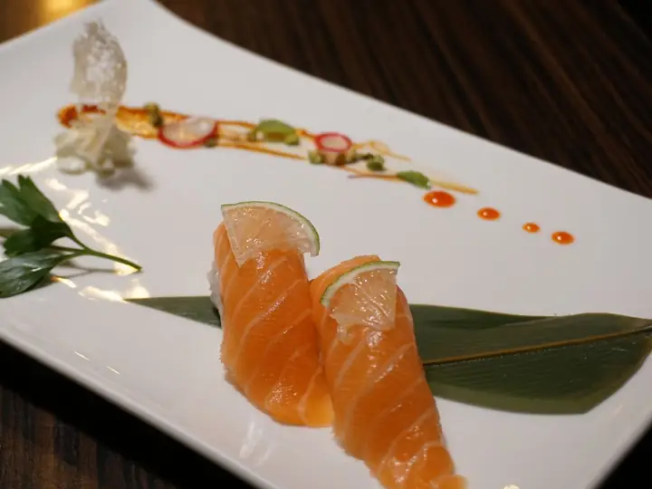
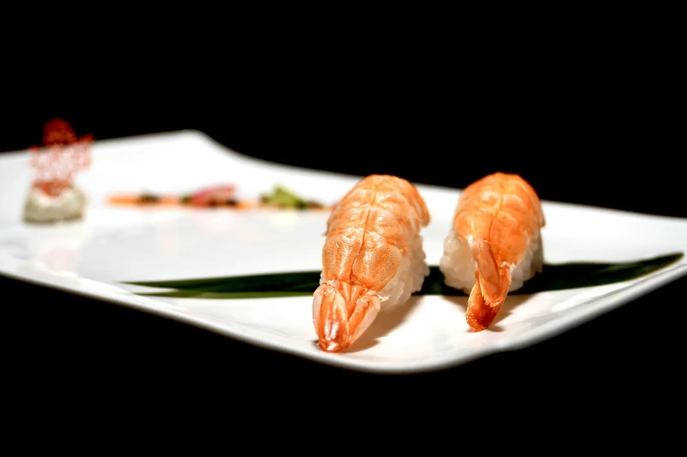
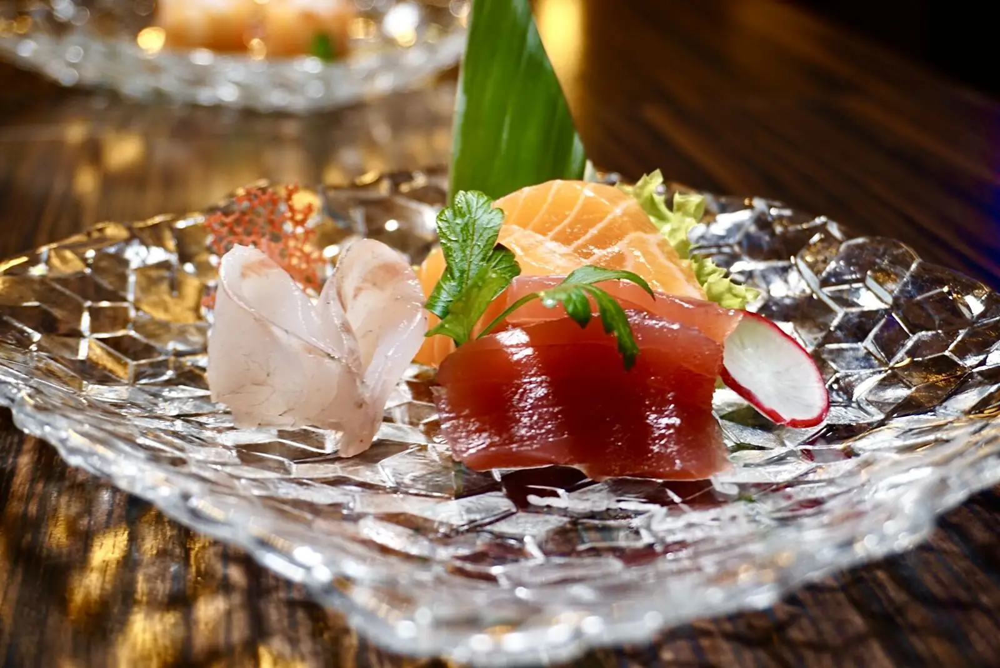
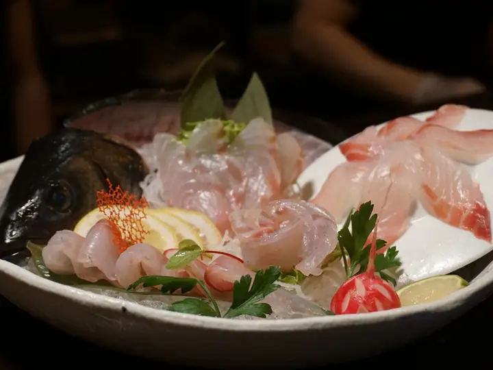
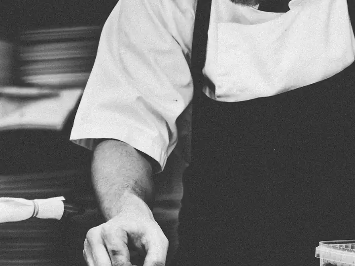
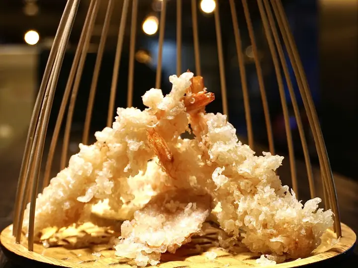
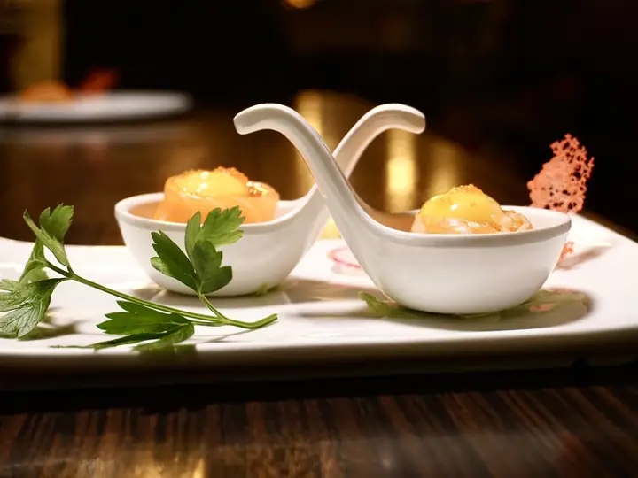
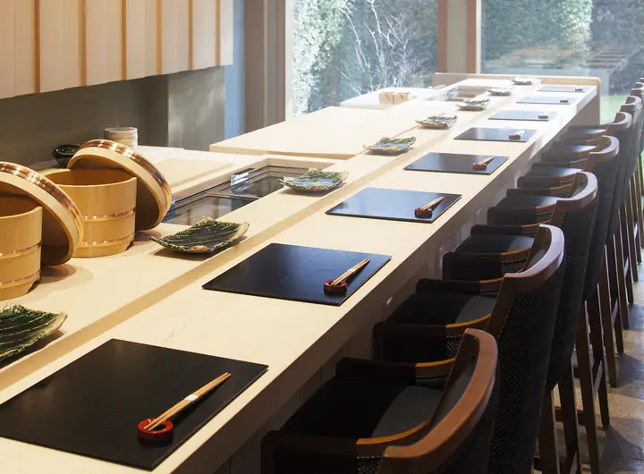
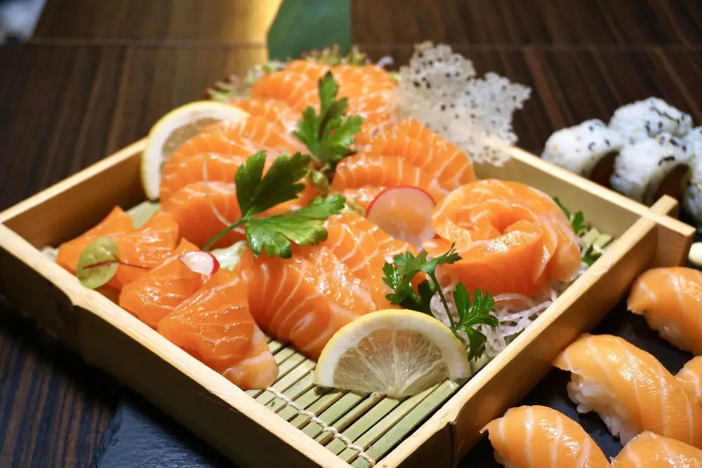
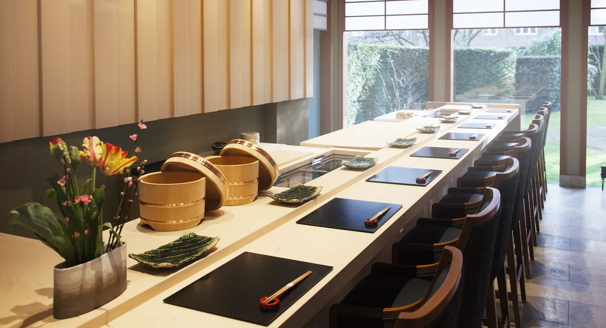

Scopri ›Omakase
Circa diciotto pezzi in un ordine pensato come un unico piatto. Un solo menu, un solo prezzo.



Omakase al banco · dieci posti · Firenze
Ikkan ichie — un pezzo, un incontro.
Riso, aceto, pesce, una mano. Non c'è salsa dietro cui nascondersi: ogni pezzo arriva sul banco e dura il tempo di un respiro. Per questo lo serviamo uno alla volta, nel momento esatto in cui è pronto, e mai un secondo dopo.
Pesce scelto ogni mattina, una stagione alla volta. Dieci posti, una sola sera.

Scopri ›Circa diciotto pezzi in un ordine pensato come un unico piatto. Un solo menu, un solo prezzo.

Scopri ›Cosa arriva sul banco in autunno, in inverno, in primavera e d'estate — e da dove viene.

Scopri ›Sei pezzi di stasera, uno dopo l'altro, nell'ordine in cui li serviamo.

Scopri ›Chiusure, nuove regole per le richieste e tutto ciò che cambia al banco.

Scopri ›Allergie, bambini, durata della cena, come si mangia un nigiri. Le risposte brevi.

Scopri ›Via dei Neri, a due passi dagli Uffizi. Orari, giorni di chiusura, telefono.

Al banco non c'è una carta. Il maestro decide l'ordine dei pezzi e li serve uno alla volta, davanti a voi, come le portate di un unico menu: prima il pesce bianco, poi il tonno, poi i crostacei e le uova, per finire con il grongo e il tamago.
€180a persona
Un solo menu, un solo prezzo, uguale per tutti al banco. Il percorso cambia con il mercato, il prezzo no.
※ Disdette: dal settimo giorno prima della data addebitiamo € 90 a persona.
Sake freddo e caldo · birra giapponese · tè verde
※ Bevande a parte. Accettiamo tutte le principali carte di credito.
Il percorso di stasera
Esempio di percorso d'autunno (cambia con il mercato)
Nessun prezzo per pezzo: tutto è compreso nell'omakase da € 180.
Il banco resta chiuso dal 24 dicembre al 7 gennaio compresi. Le richieste per gennaio si aprono il 1° dicembre. Grazie a chi ci ha fatto compagnia quest'anno.
Riceviamo richieste online e per telefono. Una richiesta diventa prenotazione solo dopo una nostra telefonata di conferma. Non accettiamo prenotazioni fatte da terzi per rivenderle: il nome sulla richiesta deve essere quello di chi siede al banco, e all'arrivo potremmo chiedere un documento.
※ Telefonate fuori dagli orari di servizio, per favore: durante il servizio il maestro è al banco.
No: al banco si mangia solo l'omakase. Ditecelo però se qualcosa non vi piace o non potete mangiarlo — lo segnaliamo al maestro prima del servizio.
Indicatela nella richiesta. Il menu è a base di pesce crudo e frutti di mare: crostacei, molluschi e glutine (nella salsa di soia) si possono evitare, il pesce crudo no. Non prepariamo un percorso vegetariano.
Circa un'ora e un quarto. Il servizio delle 19:00 finisce verso le 20:30, perché alle 21:15 il banco si riapparecchia.
Subito, appena posato davanti a voi, in un solo boccone. Con le mani va benissimo. Il pesce è già condito: non serve altra salsa.
Sì, se venite insieme. Non accettiamo richieste a nome di altri da parte di agenzie o rivenditori: il nome indicato deve essere di chi siede al banco.
Dai 12 anni in su, con lo stesso percorso degli adulti. Il banco ha dieci sgabelli alti e nessun seggiolone.
—

Questa è una richiesta, non ancora una prenotazione: vi richiamiamo entro 24 ore (giorni di apertura) per confermare. Omakase a prezzo fisso, € 180 a persona, bevande escluse.
Stiamo registrando la richiesta…